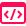
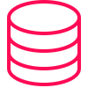
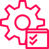

Em transição da engenharia civil para tecnologia, focada no desenvolvimento backend com Java e Spring Boot.
Sou formada em Engenharia Civil e atualmente estou em transição para a área de Tecnologia da Informação, com foco no desenvolvimento de software.
Atualmente atuo profissionalmente com gestão de projetos e análise de dados, utilizando ferramentas como Excel avançado, automação de planilhas e organização de informações técnicas. Nesse contexto, também participo do treinamento e acompanhamento de estagiários, contribuindo para o desenvolvimento da equipe e a organização das atividades..
Paralelamente, venho me dedicando aos estudos em programação e ao desenvolvimento de projetos próprios, com foco principalmente em desenvolvimento back-end utilizando Java e Spring Boot, além de tecnologias web como HTML, CSS e JavaScript.
Este portfólio reúne parte dessa jornada de aprendizado e os projetos que venho desenvolvendo ao longo da minha transição para a área de tecnologia.
Estudos em desenvolvimento de software
Início dos estudos em programação paralelamente à atuação profissional na engenharia, com foco em desenvolvimento backend utilizando Java e Spring Boot, além de fundamentos de desenvolvimento web com HTML, CSS e JavaScript.
EGATI Engenharia & Negócios
Atuação na gestão de projetos de sinalização horizontal em rodovias, acompanhando todas as etapas do planejamento à execução. Responsável pela organização e análise de dados técnicos, elaboração de relatórios para órgãos reguladores e treinamento de estagiários.
Atuação na análise de elementos rodoviários e elaboração de relatórios técnicos conforme normas regulatórias, participando de projetos de sinalização e infraestrutura rodoviária.
Participação em projetos de georreferenciamento e vetorização para mapeamento urbano, auxiliando na organização e análise de dados geoespaciais.
Fundação Paulista de Tecnologia e Educação
Apoio em análises técnicas de elementos rodoviários e elaboração de relatórios técnicos conforme regulamentações do setor.



Projetos que demonstram minha evolução no desenvolvimento backend, com foco em APIs, boas práticas e construção de soluções reais.
API de e-commerce desenvolvida com Java e Spring Boot, com cadastro de produtos e testes de requisições.
API REST com arquitetura em camadas, CRUD completo, validações, testes com JUnit e integração com MySQL.